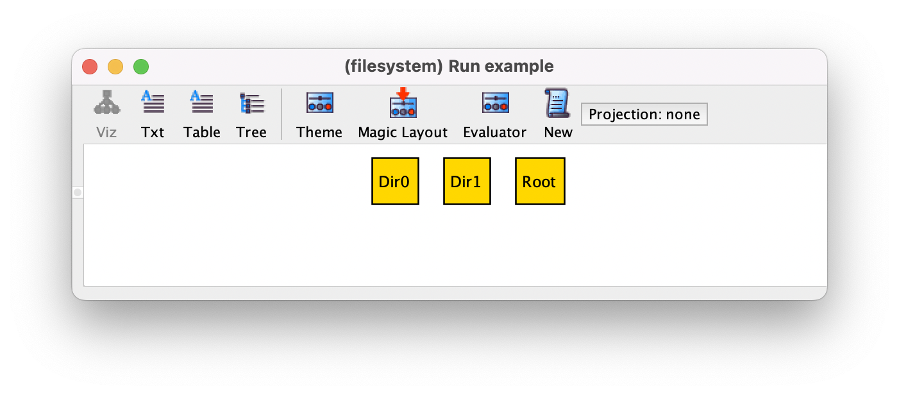

Subset signatures#
Sets (unary relations) can be introduced in a model through subset signatures. As we’ve already seen, unlike sub-signatures defined by extension, these are not guaranteed to be disjoint among themselves. In the main chapter Structural modeling we’ve seen the basic use of subset signatures, but since we actually expected those subset signatures to be disjoint, there were better modelled as sub-signatures. That is not always the case, and in fact subset signatures can be used to encode powerful patterns, including something that akin to multiple inheritance.
Subsets orthogonal to sub-signatures#
Let us add the ability to tag objects in the file system example from the main
chapter Structural modeling (such as supported by operating systems like
macOS). The concept of tagged object is transversal to the signature
Object, since both regular files and directories can be tagged. On the
other hand, not all objects are necessarily tagged. So this feature is best
encoded as a subset signature as follows.
sig Tagged in Object {}
If we now ask the Analyzer for instances of this model there may exist objects
that are both in File and Tagged and Dir and
Tagged. The following is one such possible instance for the empty
command example. Since Tagged is a subset signature, the fact
that an atom belongs to it is marked as an attribute of the node below its name
(the label of the atom always uses the most specific extension signature).
{kind=link}
Even more interesting, subset signatures can have their own fields declared
within. For instance, let’s introduce a signature Tag to represent
abstract tags, and then extend signature Tagged to also register the
non-empty set of tags assigned to each object, as follows.
sig Tag {}
sig Tagged in Object {
tags : some Tag
}
Now, for instance, any tagged directory will both be related through relations
entries (inherited from Dir) and tags (inherited from
Tagged). Below is one such example for the same command, where the root
has both entries and tags (in the theme, we’ve hidden Tag atoms, set
field tags to be shown as an attribute, and also removed the namespace
from the subset labels).
{kind=link}
Simulating multiple inheritance#
In the current model, any Object atom can be tagged or not. Using this
kind of signatures (and facts for additional constraints), we can enforce
multiple inheritance at the structural level, creating a signature whose atoms
inherit fields from multiple signatures while possibly introducing its own.
Let’s say, for the sake of example, that we want to present to users the objects
contained in a tagged directory that are also tagged. We want to register this
information in a new field tagged_content of such tagged directories. We
can define a new signature that inherits from directories and tagged objects,
and also introduces the new local field tagged_content, as follows.
sig TaggedDir extends Dir {
tagged_content : set Object
}
fact tagged_dirs {
TaggedDir in Tagged
}
By extension, all atoms of TaggedDir are directories; the additional
fact tagged_dirs forces those atoms to also be tagged. Moreover, they
are all also related by the new field tagged_content to a set of
objects. Note that this encoding still allows other tagged directories to exist
outside of TaggedDir: we are only forcing all objects in
TaggedDir to be tagged. That could be enforced with a stronger fact
instead, such as TaggedDir = Tagged & Dir (TaggedDir is exactly
the set of directories that are tagged).
However, if we start to validate our model, we’ll quickly realize that there are
some instances that are missing: the root directory will never belong to
TaggedDir. The reason is that Root was also defined as an
extension of Dir, and thus necessarily disjoint with TaggedDir.
As always, as our signature hierarchy becomes more complex, we should frequently
validate our model through run commands. In this case, this could be
solved by defining the Root signature by inclusion instead. Below is a
possible instance of this model for the example command.

Cross-signature subsets#
Another interesting feature of subset signatures is that they can be defined to
be a subset of a union of multiple signatures using the + operator,
rather than just one as we’ve seen thus far. Let us extend our example again,
and consider that our file system also supports symbolic links as a distinct
type of object.
sig Symlink extends Object {}
Our system will not allow symbolic links to be tagged (they just assume the tags
of the file they link to). We could enforce this through an additional fact that
restricted the value of Tagged, but this can be directly achieved at the
signature level by adapting its declaration as follows.
sig Tagged in Dir + File {
tags : some Tag
}
Now subset Tagged is restricted to only Dir and File
atoms, excluding other types of objects. In fact, although Dir and
File share the same top-level signature Object, signatures can
be defined as the subset of the union of completely unrelated signatures. You
will probably notices that you will have to customize the theme again at this
point. This is because in the previous version, subset Tagged and field
tags were defined for the full signature Object in the theme; at
this point, they are no longer defined for all objects, but only for signatures
File and Dir. At the theme level, this will result in the
duplication of Tagged and tags for these two signatures, which
have to be customized again.
One last, and less common, way to define subset signatures is through equality
rather than inclusion using the operator =. For instance, let’s say that
we wish to assign user permissions to exactly all Dir and File
atoms. This could be done as follows.
sig Permission {}
sig BasicFiles = Dir + File {
permission : one Permission
}
An instance for the empty command for this version of the model is the following.
{kind=link}
Obviously, this example is a bit contrived since a simpler solution would be to
extend Object with a signature for objects with permissions and then
have Dir and File extend that new signature. Nonetheless,
likewise inclusion signatures, they can also be the result of the union of
unrelated signatures, which could not be solved in such a manner.
On a last note, due to all the flexibility of subset signatures, particularly the fact that they may contain atoms from unrelated signatures, they can not be further extended with sub-signatures.